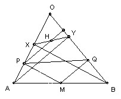

Problem B2
The triangle OAB has ∠O acute. M is an arbitrary point on AB. P and Q are the feet of the perpendiculars from M to OA and OB respectively. What is the locus of H, the orthocenter of the triangle OPQ (the point where its altitudes meet)? What is the locus if M is allowed to vary of the interior of OAB?
Solution

Let X be the foot of the perpendicular from B to OA, and Y the foot of the perpendicular from A to OB. We show that the orthocenter of OPQ lies on XY.
MP is parallel to BX, so AM/MB = AP/PX. Let H be the intersection of XY and the perpendicular from P to OB. PH is parallel to AY, so AP/PX = YH/HX. MQ is parallel to AY, so AM/MB = YQ/BQ. Hence YQ/BQ = YH/HX and so QH is parallel to BX and hence perpendicular to AO, so H is the orthocenter of OPQ as claimed.
If we restrict M to lie on a line A'B' parallel to AB (with A' on OA, B' on OB) then the locus is a line X'Y' parallel to XY, so as M moves over the whole interior, the locus is the interior of the triangle OXY.

Solutions are also available in: Samuel L Greitzer, International Mathematical Olympiads 1959-1977, MAA 1978, and in István Reiman, International Mathematical Olympiad 1959-1999, ISBN 189-8855-48-X.
© John Scholes
jscholes@kalva.demon.co.uk
28 Sep 1998
Last corrected/updated 26 Sep 2003